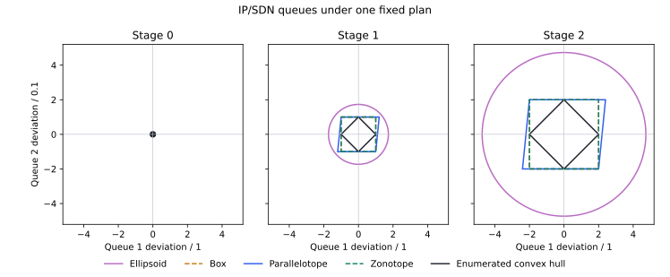

Fixed-plan reachability with external disturbances
Compare five set representations for the same two-transition plan on 35 discrete models. All 175 native runs completed. The plans use fixed zero control and an authored external set at each step.

Reproduce the queue example
The update is xk+1 = Axk + Buk + Ewk. Both A and E are the 3 × 3 identity, the affine offset is zero, and there are two transitions. Controls are the two-vector (0, 0) at both stages.
⎡ −1 0 ⎤
B = ⎢ 1 −1 ⎥
⎣ 0 1 ⎦
x₀ = (35, 20, 10)ᵀ and w₀ = (10, 0, −8)ᵀ.
At each step w ranges independently over the convex hull of w₀ and its four perturbations (±1, 0, 0)ᵀ and (0, ±0.1, 0)ᵀ added to w₀. Thus the normalized projected hull at stage 1 is |y₁| + |y₂| ≤ 1, and at stage 2 it is |y₁| + |y₂| ≤ 2. Full state sets are propagated before projection. Universal admissible state sets isolate geometry, so the third nominal coordinate can reach −6.
Check the results
- The independent rational replay enumerates every disturbance word. Native polytope points differ by at most 7.91 × 10−16 after scaling each coordinate error by the larger of one and the exact coordinate magnitude.
- All 1,013 generated points per family passed exact membership against the stored binary64 box, parallelotope and ellipsoid data.
- All 3,774 sampled directions passed the zonotope support comparison. These checks cover the sampled directions.
- The two zero external-map models, 5 and 13, have singleton physical trajectories despite their perturbed inputs.
Reproduction commands · C++ producer · Raw records · Independent checker · Audit · Source and checksums